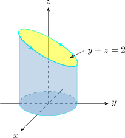

4.13 Stokes’ Theorem
Stokes’ theorem is Green’s theorem for a surface in space: the circulation of a field around the boundary of a surface equals the flux of its curl through the surface. The orientations must match: the boundary curve \(C\) of an oriented surface \(S\) is positively oriented if, walking along \(C\) with your head in the direction of \(\mathbf n\), the surface is on your left.
Theorem 4.13.1 (Stokes’ theorem). Let \(S\) be an oriented piecewise smooth surface that is bounded by a simple closed piecewise smooth boundary curve \(C\) with positive orientation. Let \(\mathbf F\) be a vector field whose components have continuous partial derivatives on an open region in \(\mathbb {R}^3\) that contains \(S\). Then \[\oint _C \mathbf F\cdot d\mathbf r = \iint \limits _S(\curl \mathbf F)\cdot d\mathbf S .\]
If \(S\) is a flat region in the \(xy\)-plane with upward orientation, then \(\mathbf n = \mathbf k\), \((\curl \mathbf F)\cdot \mathbf k = Q_x - P_y\), and Stokes’ theorem is exactly Green’s theorem. A proof for a graph \(z = g(x,y)\) reduces the general case to this one by projecting onto the \(xy\)-plane.
Example 4.13.2. Evaluate \(\oint _C \mathbf F\cdot d\mathbf r\), where \(\mathbf F = -y^2\,\mathbf i + x\,\mathbf j + z^2\,\mathbf k\) and \(C\) is the curve of intersection of the plane \(y + z = 2\) and the cylinder \(x^2 + y^2 =1\), oriented counter-clockwise when viewed from above.

Solution. The line integral is awkward directly, so use Stokes’ theorem with \(S\) the elliptical region of the plane \(y + z = 2\) inside the cylinder, oriented upward to match \(C\). The curl is \[\curl \mathbf F = \begin {vmatrix} \mathbf i & \mathbf j & \mathbf k\\[1ex] \frac {\partial }{\partial x} & \frac {\partial }{\partial y} & \frac {\partial } {\partial z}\\[1ex] -y^2 & x & z^2 \end {vmatrix} = (0 - 0)\,\mathbf i - (0 - 0)\,\mathbf j + (1 + 2y)\,\mathbf k .\] The projection \(D\) of \(S\) onto the \(xy\)-plane is the disc \(x^2 + y^2 \leq 1\), and \(S\) is the graph of \(z = g(x,y) = 2 - y\). With \(P = Q = 0\) and \(R = 1 + 2y\) in the flux formula, \[\oint _C \mathbf F\cdot d \mathbf r = \iint \limits _D (1 + 2y)\,dA = \int ^{2\pi }_0 \int ^{1}_0( 1 + 2r\sin \theta )\, r\, dr\, d\theta = \pi ,\] the term in \(\sin \theta \) integrating to zero.
Example 4.13.3. Verify Stokes’ theorem for \(\mathbf F = y\,\mathbf i - x\,\mathbf j\) and the upper hemisphere \(x^2 + y^2 + z^2 = 1\), \(z\geq 0\), oriented upward.
Solution. The boundary is the unit circle in the \(xy\)-plane, counter-clockwise. With \(\mathbf r(t) = \langle \cos t,\sin t, 0\rangle \), \(\mathbf F\cdot \mathbf r' = -\sin ^2 t - \cos ^2t = -1\), so \(\oint _C\mathbf F\cdot d\mathbf r = -2\pi \). On the other side, \(\curl \mathbf F = (-1 - 1)\,\mathbf k = -2\,\mathbf k\), and the outward unit normal of the sphere is \(\mathbf n = \langle x,y,z\rangle \), so \[\iint \limits _S\curl \mathbf F\cdot d\mathbf S = \iint \limits _S -2z\,dS = -2\int _0^{2\pi }\int _0^{\pi /2}\cos \phi \sin \phi \,d\phi \,d\theta = -2\pi .\] The two sides agree. Any surface with the same boundary gives the same flux of the curl; the flat disc gives \(\iint _D -2\,dA = -2\pi \) at once.
Questions on this section
Stuck on something here? Ask below and it stays attached to this topic.